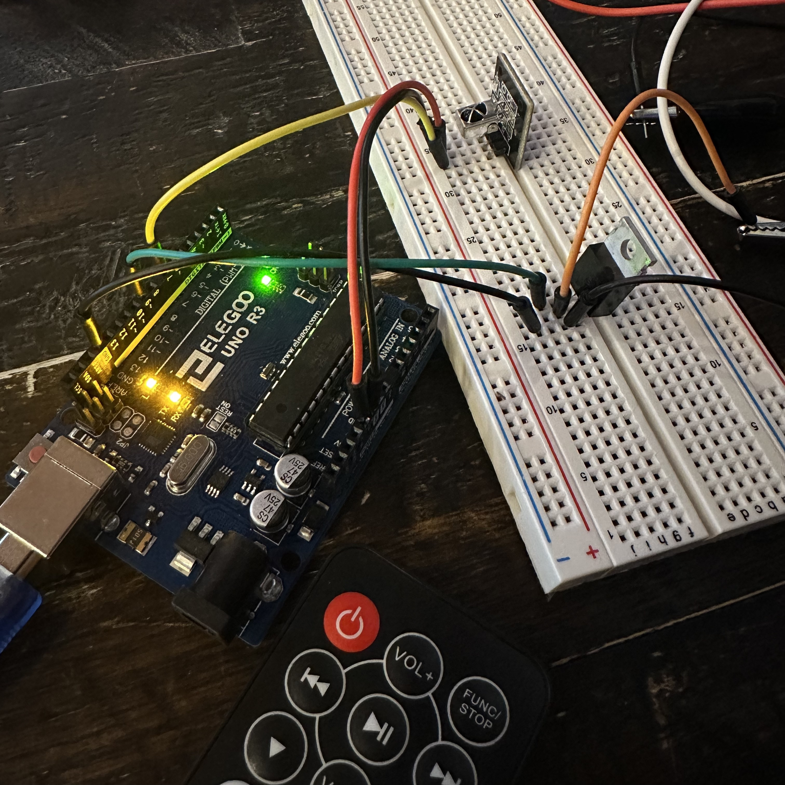
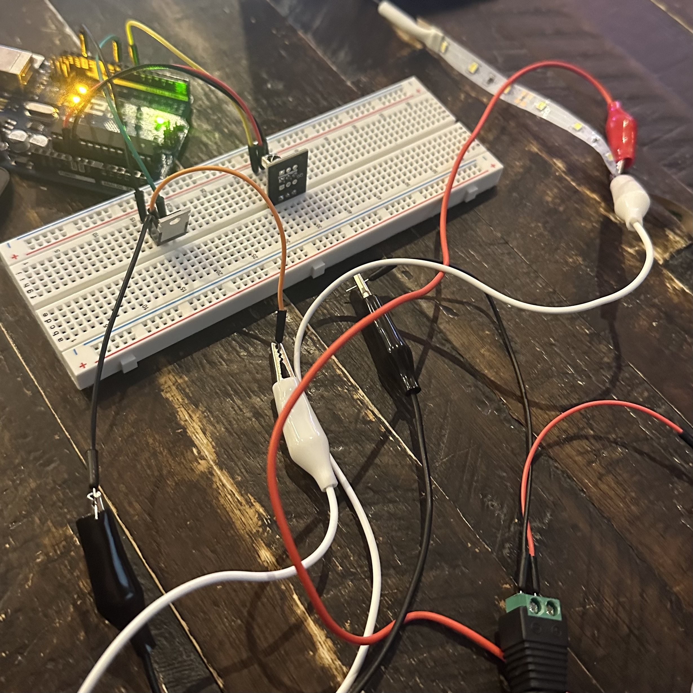
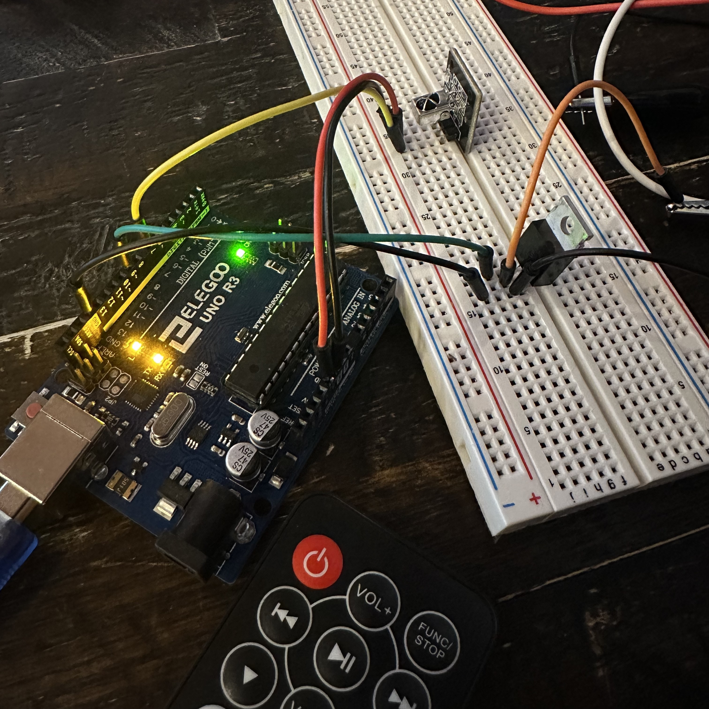
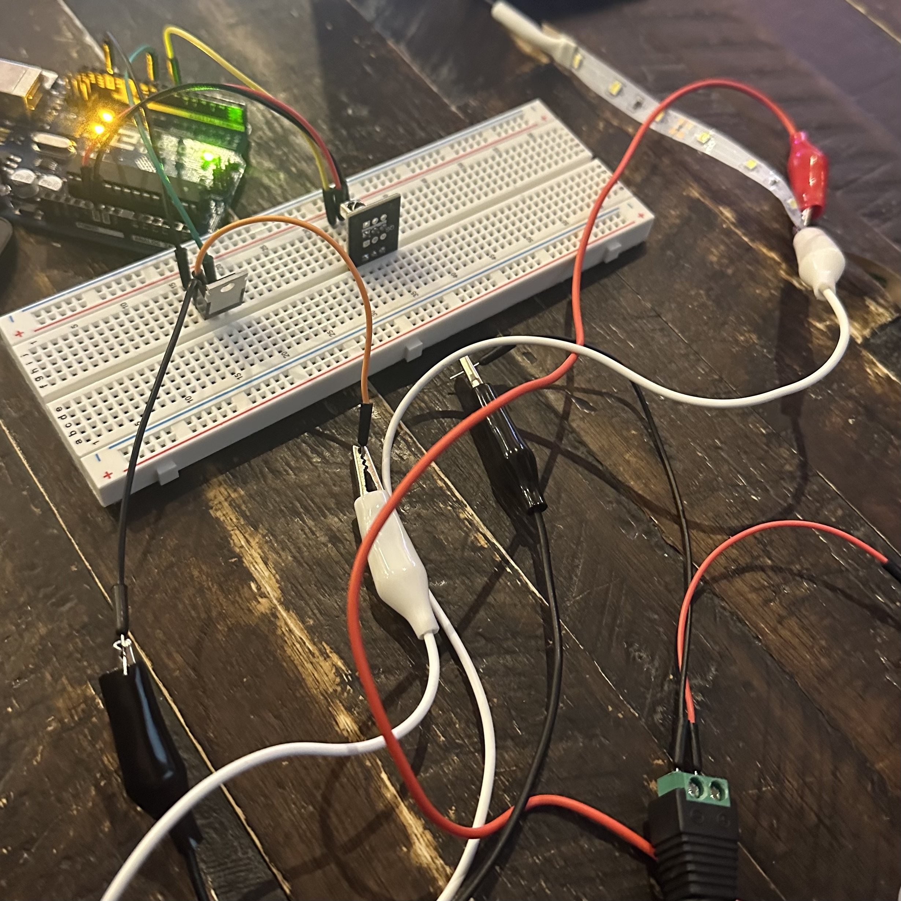
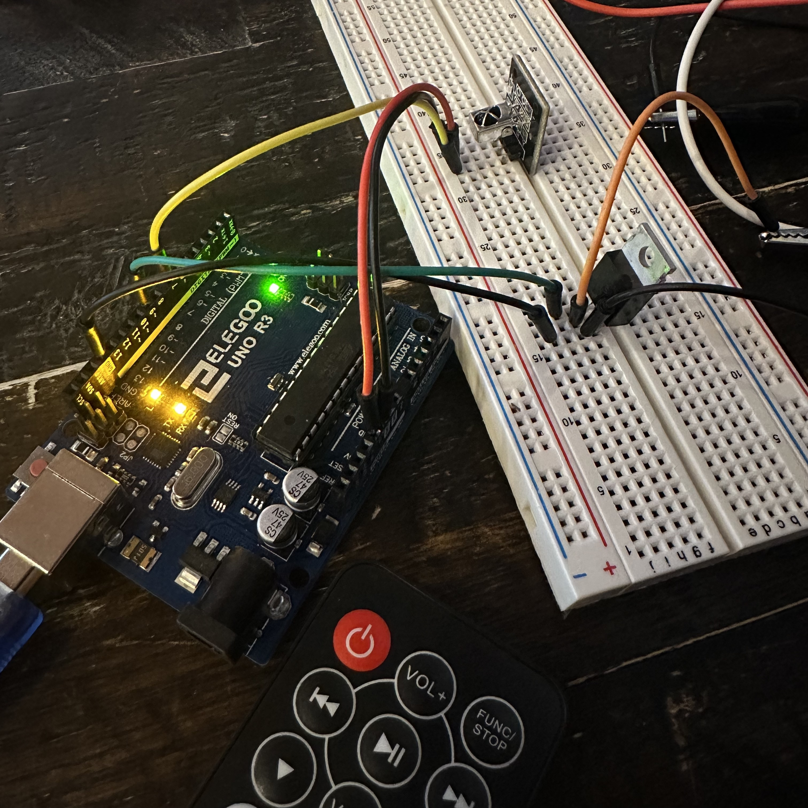
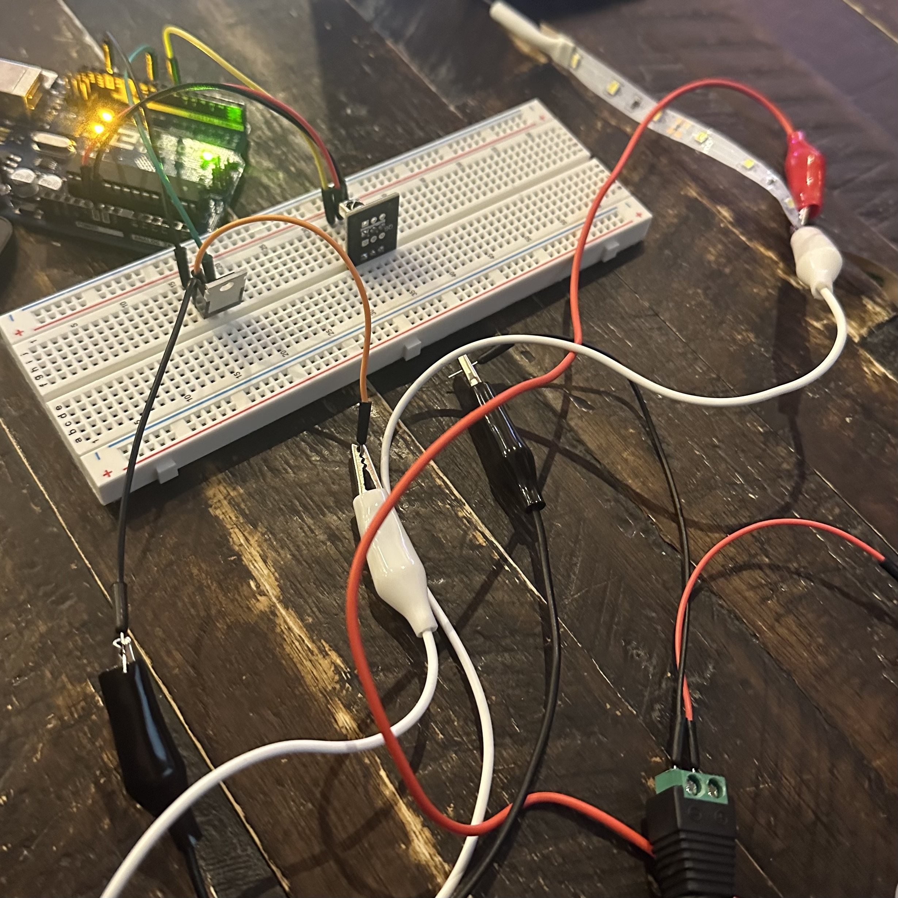
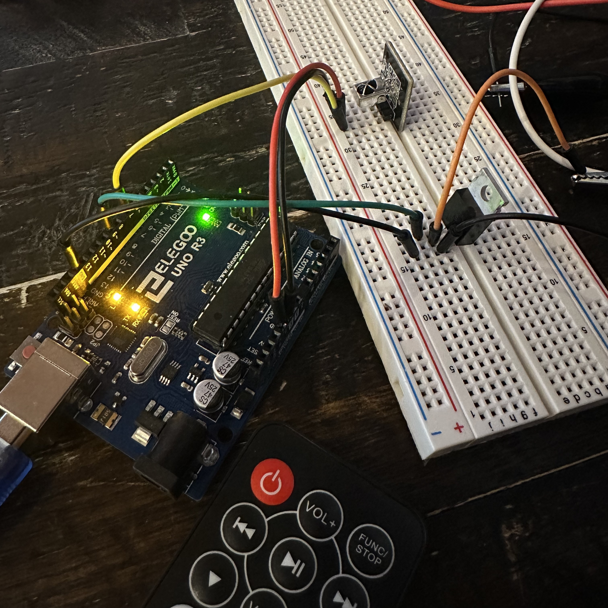
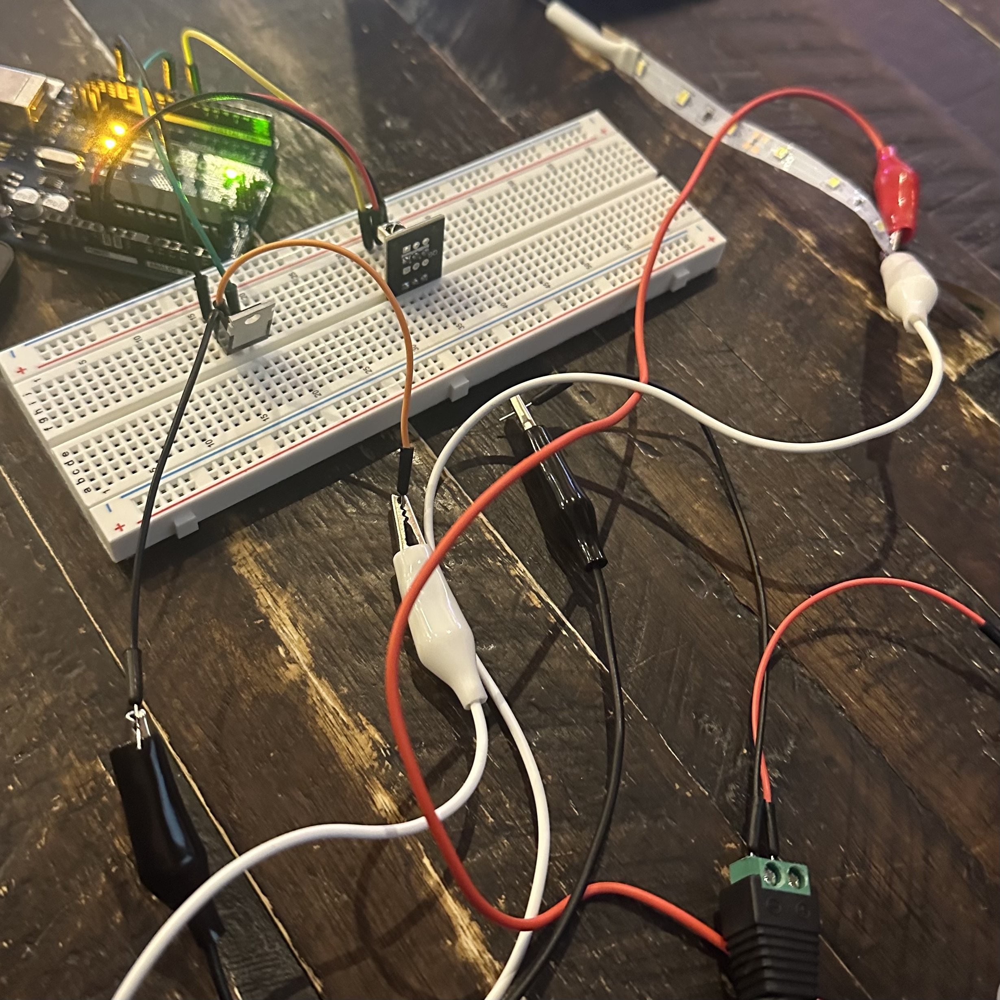

For this assignment, we were tasked to use a transistor to control load power separate from logic power. I had to use a load output device (LED light strips), and an input sensor (IR Receiver) with a library. In the GIF above, the remote control turns the strips on, and then the buttons 1, 2, and 3, control different pattern modes on the strip. Mode number 1 is blinking, mode number 2 is fading, and mode number 3 is a blinking pattern.
In the schematic to the left, the LED strip (which has a lot more parallels than what is shown in the drawing) is connected to
the 12V load power. Then, it connects to the drain of the N-MOSFET which then connects to pin 9 and ground.
I connected the IR Receiver to pin 7 to be able to capture button presses from the remote.
I didn't draw the connections on the breadboard, but feel free to use the images above for clearer
representations of the project.
LED Light Strip Calculation
Considering the LED schematic is 100 parallel strips of 3 white LEDs each, I calculated the total
current and voltage. In one parallel strip considering white LEDs have a 3.3 voltage drop, 3 * 3.3 = 9.9V total in one series.
12V power - 9.9V drop = 2.1V total in one series. Each resistor is 240 Ohms, so in one set of 3 lights the current is 8.75mA.
The total current is 0.875A. since 8.75mA * 100 = 875mA. The total voltage is 12V since it stays the same in parallel.
NMOSFET Calculation
The 12V load power is within a safe operating range of this transistor. The NMOSFET is used as a switch controlled by pin 9.
When pin 9 is HIGH, the NMOSFET conducts, allowing current to flow through the LED strips. When pin 9 is LOW, the NMOSFET is off,
cutting off the current.
The LED light strip current of 0.875A is within the 32A operating range.
I first started out by using the following code to read the numbers that button presses on my remote printed into the serial monitor. Since I only wanted to use buttons 1, 2, and 3 for this assignment, I found that pressing 1 printed 12, pressing 2 printed 24, pressing 3 printed 94, and pressing the power button printed 69. The power button will be used for turning the entire system on and off.
#include
#define IR_RECEIVE_PIN 7
void setup() {
Serial.begin(9600);
IrReceiver.begin(IR_RECEIVE_PIN);
}
void loop() {
if (IrReceiver.decode()) {
IrReceiver.resume();
Serial.println(IrReceiver.decodedIRData.command);
}
Then, I used the above information and also information about the Remote library in the following website
link (https://roboticsbackend.com/arduino-ir-remote-controller-tutorial-setup-and-map-buttons/) to set up the mapping of each button I want to be using.
I had to use additional coding logic to figure out how to make the LED light patterns repeat on loop until a different
button was pressed.
I ran into hiccups with turning the system off while a certain mode is running. Overall, I was happy with the result!
/*
Higher Voltages Assignment
This code uses a high lod output device (led light strip) that is controlled by an IR
sensor remote. The main functionality is that the remote controls 3 different modes: blink, fade,
and a blinking pattern.
*/
// library integrated into code for the remote sensor
#include IRremote.h
// the output pin for the light strip
const int ledStrip = 9;
// 0 if off and 1 if on to keep track of led on/off state
int ledState = 0;
// current light effect mode to keep track of which mode it is on
int currentMode = (-1);
// 3 different modes corresponding to 3 different button presses
const int blinkMode = 0;
const int fadeMode = 1;
const int patternBlink = 2;
// values to help with the fading LED light mode
int brightness = 0; // how bright the LED is
int fadeAmount = 5; // how many points to fade the LED by
// defining the pin number that the IR receiver is attached to
#define ir_receiver 7
// using the library to map different variables to different button press values
#define button_1 12
#define button_2 24
#define button_3 94
#define button_on_off 69
void setup() {
// starting the Serial to print button presses
Serial.begin(9600);
// starting the IrReceiver
IrReceiver.begin(ir_receiver);
// setting the ledStrip pin to an output so we can digitalWrite() and analogWrite()
pinMode(ledStrip, OUTPUT);
}
void loop() {
// Check if an infrared signal is received
if (IrReceiver.decode()) {
// Extract the command from the decoded IR data
int command = IrReceiver.decodedIRData.command;
// Print the received command to Serial Monitor
Serial.println(command);
// Check if the received command is the power on/off button
if (command == button_on_off) {
// Toggle the LED state and turn the whole strip on or off accordingly
if (ledState == 0) {
digitalWrite(ledStrip, HIGH);
ledState = 1;
Serial.println("Pressed on button on");
} else {
digitalWrite(ledStrip, LOW);
ledState = 0;
Serial.println("Pressed on button off");
}
} else {
// handle all other buttons pressed by setting the current LED mode
switch (command) {
case button_1:
currentMode = blinkMode;
break;
case button_2:
currentMode = fadeMode;
break;
case button_3:
currentMode = patternBlink;
break;
// extra case if any button that isn't 1, 2, 3 is pressed
default:
Serial.println("Button not recognized");
}
}
// Resume IR receiver to continue receiving signals
IrReceiver.resume();
// Introduce a delay to avoid rapid button presses
delay(100);
}
// Perform actions based on the current LED mode on loop
switch (currentMode) {
case blinkMode:
// Blinking LED mode turns on and off with 1 second delay on loop
digitalWrite(ledStrip, HIGH);
delay(1000);
digitalWrite(ledStrip, LOW);
delay(1000);
break;
case fadeMode:
// Fading LED mode writes a brightness level that changes over time on loop
analogWrite(ledStrip, brightness);
brightness = brightness + fadeAmount;
if (brightness <= 0 || brightness >= 255) {
fadeAmount = -fadeAmount;
}
delay(30);
break;
case patternBlink:
// Pattern of blinks with increasing brightnesses and different delays on loop
analogWrite(ledStrip, 0);
delay(300);
analogWrite(ledStrip, 50);
delay(300);
analogWrite(ledStrip, 100);
delay(300);
analogWrite(ledStrip, 200);
delay (30);
analogWrite(ledStrip, 200);
delay(1000);
break;
default:
// Default case when the mode is not recognized
break;
}
}